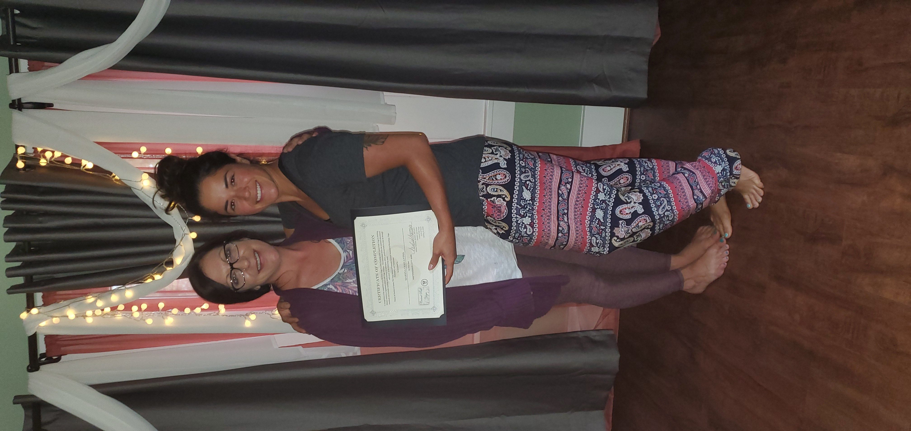

Aum,
Marina Cervantes,
Your Personal Yoga Teacher.

Well hello! Welcome! Appreciate You Visiting! Allow me to tell you a little
about where I come from. I'm out of a small town in Illinois. I am certified through Melissa Matteson
out of Central Park Yoga. Beyond that we are backed through Yoga Alliance.
During my time in class we were told to present a 2 page paper explaining our "why"...
which meant why, yoga. Why or how did we fall in love with yoga. I'm not gonna dive too
deep in that however I would like to touch base. I started doing yoga as a recovery from
working out once a week. If anybody is familiar with P90X, you can relate. I would put that
video in and only do a little bit never fully completing it(1.5hrs, whos got time for that, am i right?)
But one day I stuck it out, did the video from start to finish... And boy do I wish I had
completed it sooner. As I lay there in Shavasana I felt heavenly. I felt relaxed and rejuvenated.
I could take a nap and sleep well or I could do 1000 errands with a smile on my face. I want
to be able to pass that feeling onto you, yes you! So take a chance with me and "finish the video."
{% endblock content %}